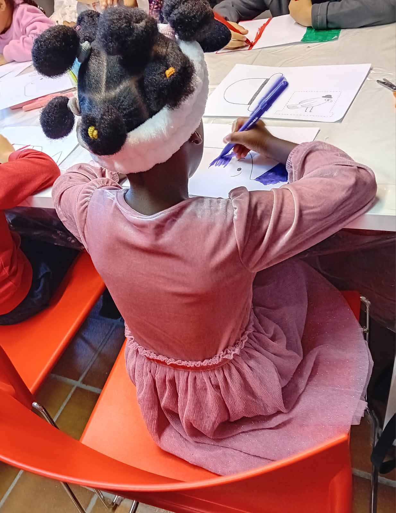
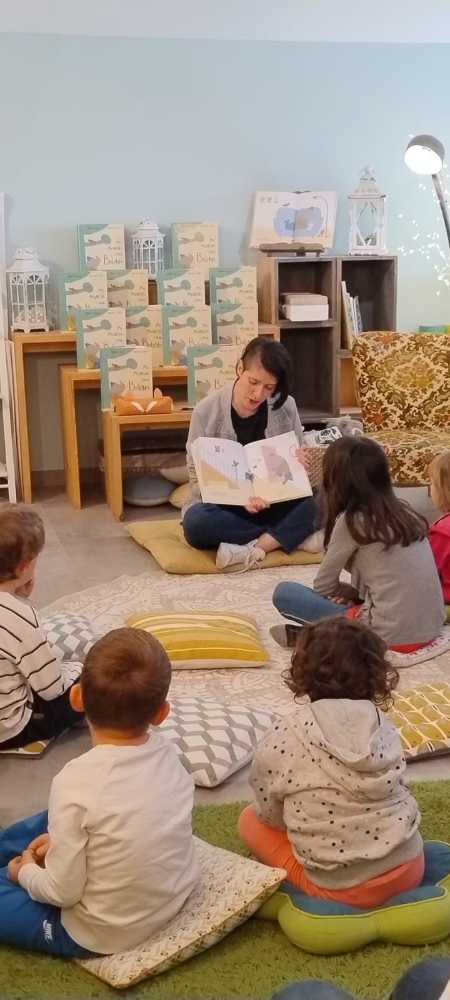
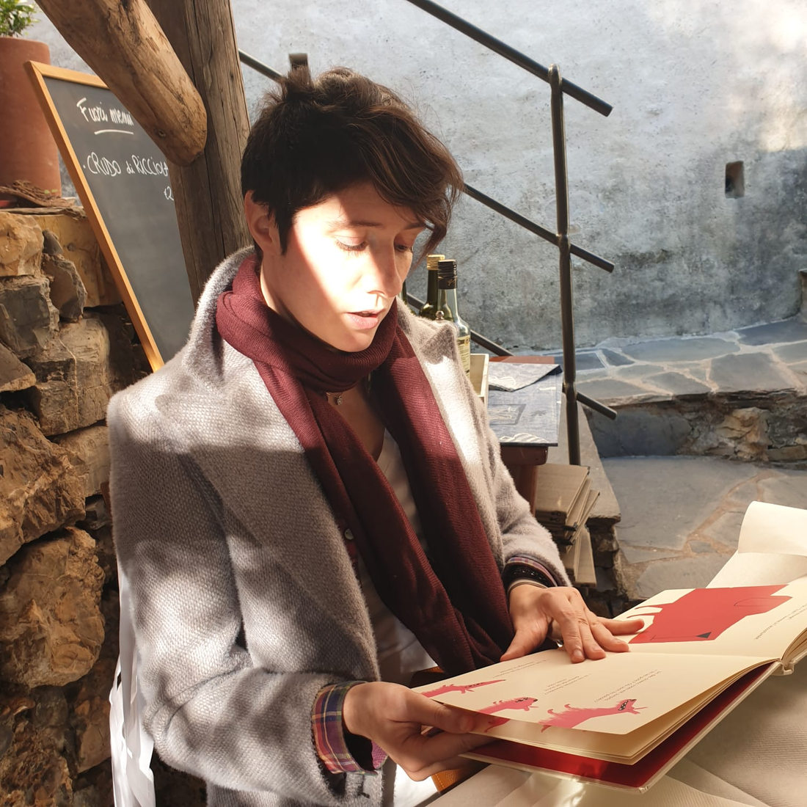

I write books
for children(but they're for everyone).
My books


As Invisible as Lukas
Original title: Lukas, nematomas berniukas
Misteris Pinkmanas · 2025
Bilingual edition · Lithuanian / English


Use the arrows to explore other editions of each book.
Workshops & events
I meet children to create moments of reading, play and creativity, with books as our starting point.

Festivals
Festivals, readings and workshops devoted to books and imagination.
LibrArte (Folignano) · Librinfesta (Alessandria) · Uscire dal Guscio (Bologna)

Schools
Visits and workshops that use picture books to explore emotions, relationships and imagination.
Shared reading, creative activities and projects developed with teachers and classes of different ages.

Bookshops & libraries
Readings, workshops and activities for young readers, and for adults who love stories too.
For teachers
In the classroom
My books can offer opportunities to see the world from different perspectives, ask questions, share experiences and imagine new possibilities together.
Resources
Activities, worksheets and downloadable materials inspired by my books.
Invite me
Would you like to organise a reading, a workshop or a school visit? I'd love to hear from you! Send me an email and tell me a little about your idea.
About
I write children's books. Or at least, that's my excuse to keep making up stories.
Those who don't believe in magic
will never find it.Roald Dahl

Contact
Write to me
For collaborations, publishing projects or simply to say hello.
Instagram@m_acky
Stories often begin with a conversation.